5 Widerstandstomographie
5.1 Oberflächenmessungen
5.1.1 Klassische Mess-Abfolgen
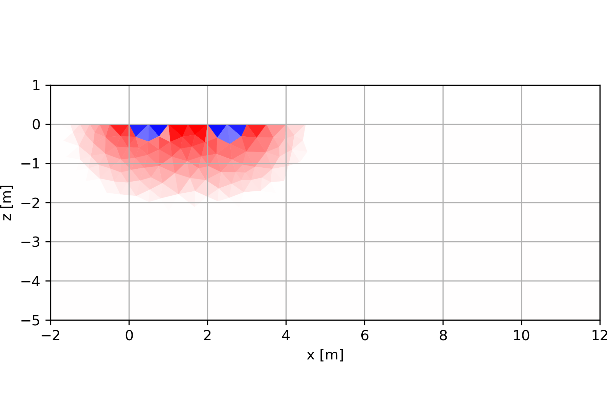

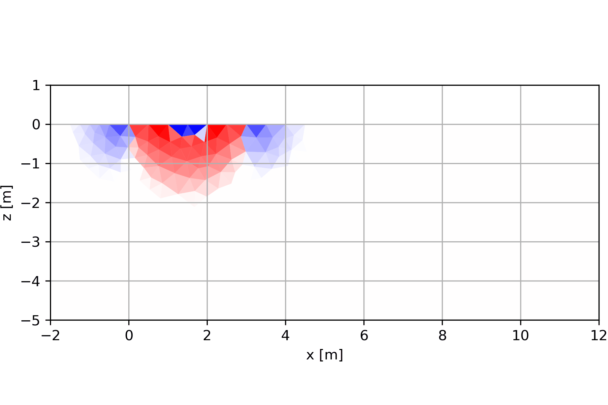
5.2 Bohrlochgeoelektrik
5.2.1 Verhalten an Grenzflächen
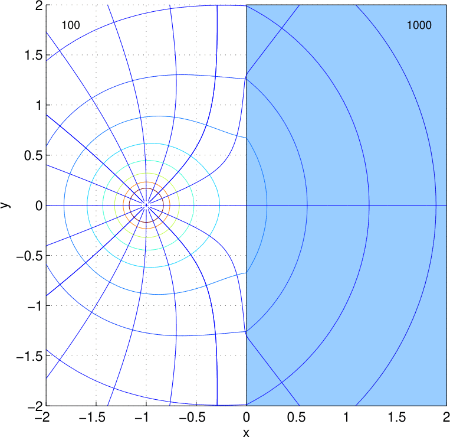

5.2.2 Vergrabene Elektroden
Elektrode im Vollraum: \(u=\frac{\rho I}{4\pi |\vb r-\vb r_A|}\) \(\Rightarrow\) Geometriefaktor \(k=\frac{1}{4\pi |\vb r-\vb r_A|}\)
Stetigkeit an Erdoberfläche durch Spiegelelektrode in \(\vb r_A'\)
Überlagerung \(u=\frac{\rho I}{4\pi |\vb r-\vb r_A|}+\frac{\rho I}{4\pi |\vb r-\vb r_A'|}\) \(\Rightarrow\) \(k=\frac{1}{4\pi |\vb r-\vb r_A|}+\frac{1}{4\pi |\vb r-\vb r_A'|}\)
Allgemeine Formel: \(k = \frac{4\pi}{\frac{1}{\overline{AM}}+\frac{1}{\overline{A'M}}-\frac{1}{\overline{AN}}-\frac{1}{\overline{A'N}}-\frac{1}{\overline{BM}}-\frac{1}{\overline{B'M}}+\frac{1}{\overline{BN}}+\frac{1}{\overline{B'N}}}\)
5.2.3 Vergrabene Elektroden - Modellierung
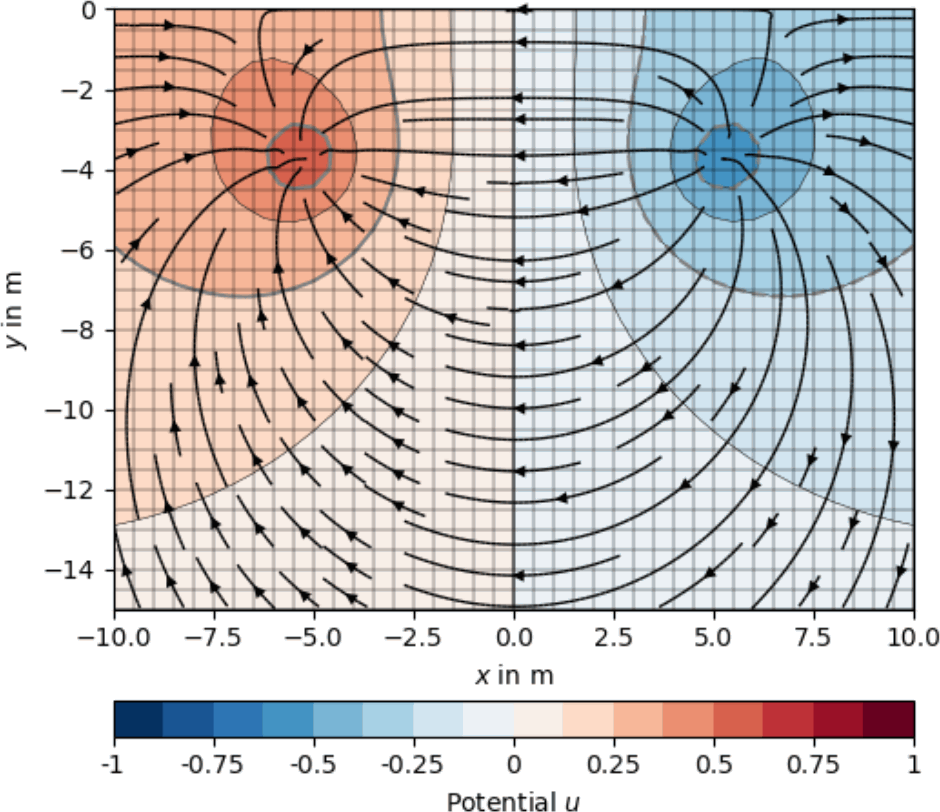
Stetigkeit an Erdoberfläche erreicht durch Spiegelelektrode in \(\vb r_A'\)
Überlagerung \(u=\frac{\rho I}{4\pi |\vb r-\vb r_A|}+\frac{\rho I}{4\pi |\vb r-\vb r_A'|}\)
\(\Rightarrow\) \(k=\frac{1}{4\pi |\vb r-\vb r_A|}+\frac{1}{4\pi |\vb r-\vb r_A'|}\)
5.2.4 Bohrloch-Geoelektrik
- Elektroden-Anordnung in einem Bohrloch
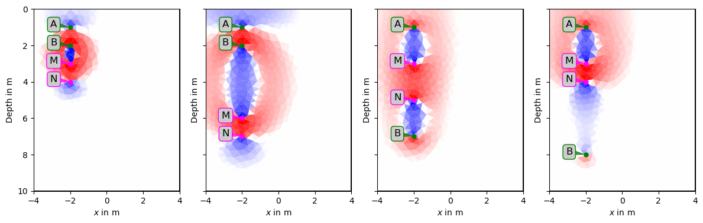
5.2.5 Crosshole-Geoelektrik
- Verteilung von Strom und Spannungselektroden auf 2 Bohrlöcher


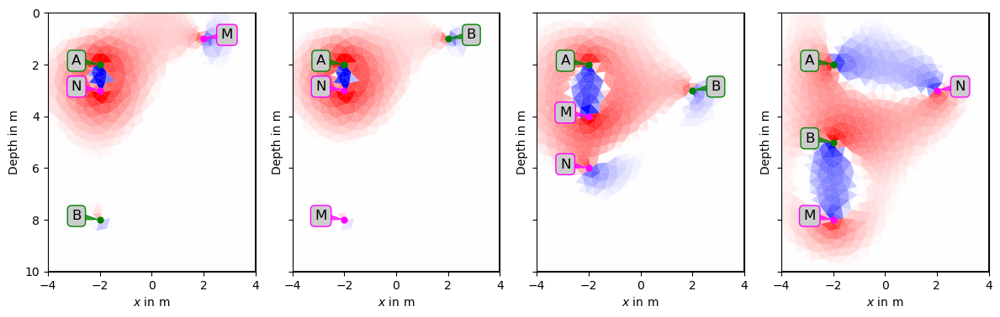
5.3 3D-Geoelektrik
5.4 Modellierung & Inversion
5.4.1 Vorwärtsrechnung
Lösung der partiellen Differentialgleichung
\[ -\nabla \cdot \sigma \grad u = \delta(\vb r - \vb r_s) \]

5.4.2 Inversion

- Diskretisierung, z.B. mit Dreiecken
- Iterative Verbesserung
- Vorwärtsrechnung & Sensitivitäten
- glattes Untergrundmodell
5.4.3 Inversion - Methodik
Datenvektor \(\vb d=\{d_i\}=\{\rho^a_i\}\), Modellvektor \(\vb m=\{m_j\}=\{\rho_j\}\)
Datenmisfit \(\vb \delta \vb d = \vb d - \vb f(\vb m)\) soll klein sein (Quadrate)
Modellveränderung \(\delta\vb m\) über Sensitivitätsmatrix \(S_{i,j}=\pdv{f_i(\vb m)}{m_j}=\pdv{\rho_a(\rho)}{\rho}\)
\[\Rightarrow \vb S \vb \delta \vb m = \delta \vb d\]
Least-SquaresLösung \(\vb S^T \vb S \delta \vb m=\vb S^T \delta \vb d\) +Zusatzterme
5.5 Ausgedehnte Elektroden
- Vereinfachtes Modell: Punktförmige Stromeinspeisung \(j=I\frac{\vb r}{r^3}\)
- Endliche Elektroden: Verteilung des Stroms auf Fläche
- Plattenelektroden, Linienelektroden, Ringelektroden
- (Halb)Kugel-förmige Elektroden: identische Lösung im Außenraum
5.5.1 Nicht-Punkt-Elektroden
Das Complete Electrode Model (CEM)
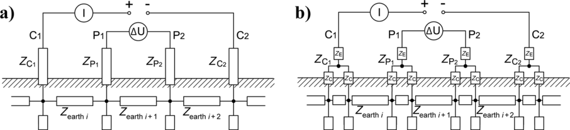
Zusätzliche Gleichungen: \(z_l\sigma\pdv{u}{n} + u = U_l\) auf \(\Gamma_l\) und \(\int_{\Gamma_l}\sigma \pdv{u}{n}ds=I\)
5.5.2 Modellierung von langen Elektroden

5.5.3 Einfluss der Stecktiefe

5.5.4 Langelektroden - Stromdichte
5.5.5 Langelektroden - Sensitivitäten
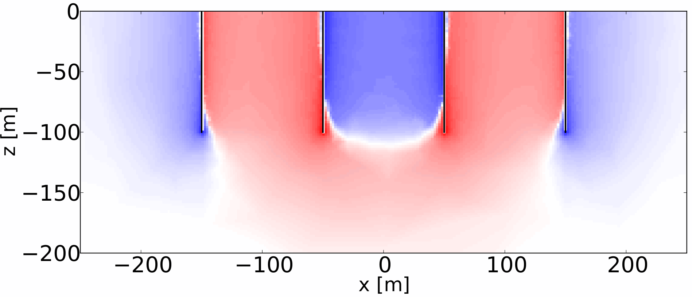

5.5.6 Lang-Elektroden-Geoelektrik (SaMoLEG)
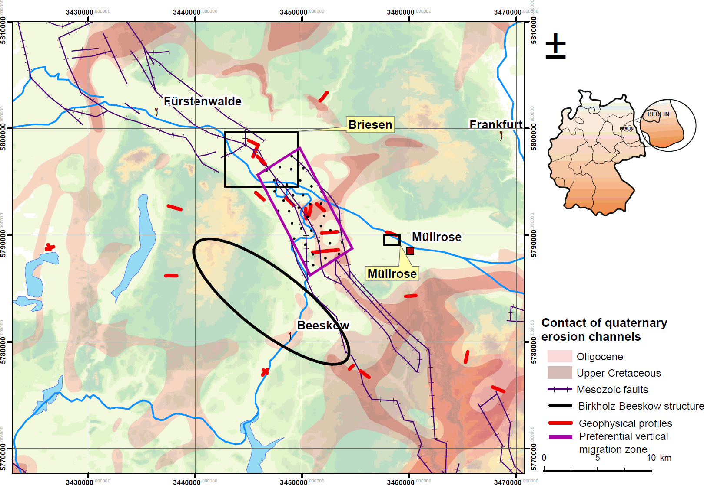
- stahlverrohrte Bohrlöcher als Elektroden (Günther u. a. 2015)

5.5.7 Ringelektroden
- Beispiel Salzwasser-Monitoring-System SAMOS
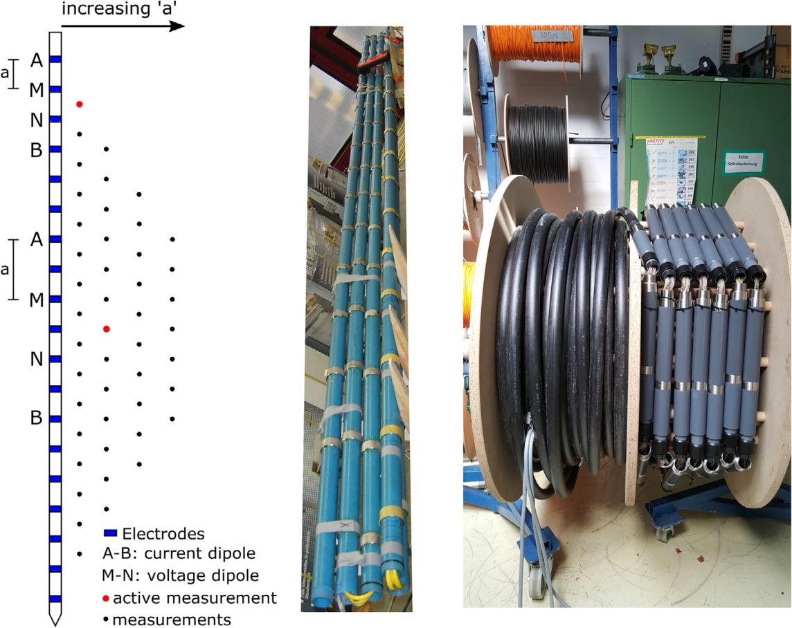
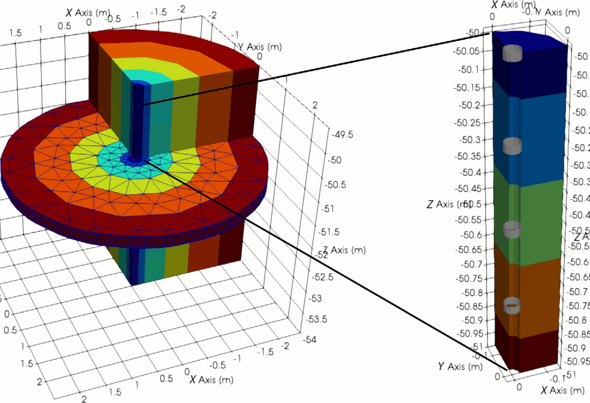